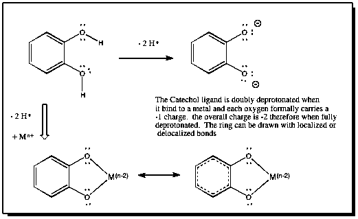

|
More Information about the
[Tris(catecholato)Iron(III)]3- Anion
The Λ-[Tris(catechol)Iron(III)]3- Ion (showing multiple bonds but not illustrating the delocalized nature of the bonds) is presented on your left.
Each ligand carries a 2- charge. Three 2- ligands coordinate to the Fe(III) ion to create a complex with overall charge of 3-.

Reference for the Structure of the Λ Isomer: K.N. Raymond, S.S.Isied, L.D. Brown, F.R. Fronczek, J.H. Nibert; J. Am. Chem. Soc., Vol 98, 1976, p. 1767.
Reference for the Structure of the Δ Isomer (not shown on this page): B.F. Anderson, D.A. Buckingham, G.B. Robertson, J. Webb; Acta Crystallogr., Sect. B, Struct Crystallogr. Cryst. Chem.; Vol 38, 1982, p. 1927.
|